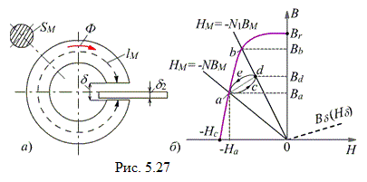
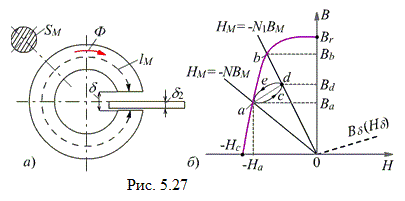
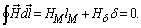

5.3.4.1. Расчёт магнитной цепи постоянного магнита с воздушным зазором
Рассчитаем магнитную индукцию Вδ в зазоре тороидального магнита (рис. 5.27а), полагая известными длину lм средней линии магнитной индукции и площадь поперечного сечения Sм ферромагнетика, длину δ и площадь сечения Sδ воздушного зазора, и размагничивающую часть гистерезисной петли Bм(Нм) материала магнита с остаточной индукцией Вr и коэрцитивной силой −Нс (рис. 5.27б).


В воздушном зазоре магнитное поле возбуждается постоянным магнитом, которое в первом приближении можно считать однородным, и магнитный поток Ф = BмSм = BδSδ. Откуда
Bδ = BмSм / Sδ; Нδ = Bδ / µ0 = 8·105BмSм / Sδ.
Зависимость Bδ(Нδ) между магнитной индукцией и напряженности магнитного поля в воздушном зазоре изображена на рис. 5.27б пунктирной линией. При расчёте постоянных магнитов построения ведут не в координатах Ф и Uм, а в координатах Нм и Вм, т. е. строят кривую размагничивания и прямую Нм = −(1 / Rδм;)Bм, получаемую из закона полного тока для магнитной цепи:

(5.16)
Нуль в правой части уравнения (5.16) объясняется тем, что на постоянном магните нет обмотки с током, поэтому
Нмlм = −Hδδ.
Откуда, после подставки Нδ, получаем
Нм = −Hδδ / lм = − 8·105δSмBм / (lмSδ) = −NBм,
(5.17)
где N = 8·105δSм / (lмSδ) – коэффициент размагничивания постоянного магнита при введении воздушного зазора δ в его магнитную цепь.
Для определения магнитной индукции на рис. 5.27б следует нанести прямую Hм = − NBм. В точке а пересечения прямой с кривой размагничивания удовлетворяются обе зависимости Hм = −NBм и Bм(Нм); точка пересечения горизонтали, проведённой через точку а, с осью ординат определяет индукцию Bа в ферромагнетике, а магнитная индукция в воздушном зазоре Bδ = BаSм/Sδ.
Положение рабочей точки, кроме значений Bм и Нм, определяет также запас магнитной энергии в воздушном зазоре, т. к. удельная магнитная энергия (энергия в единице объёма) Wм = BмНм/2, Дж/м3. Произведение BмНм называют энергетическим произведением. Системы с постоянными магнитами проектируют так, чтобы энергетическое произведение было максимальным.